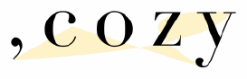
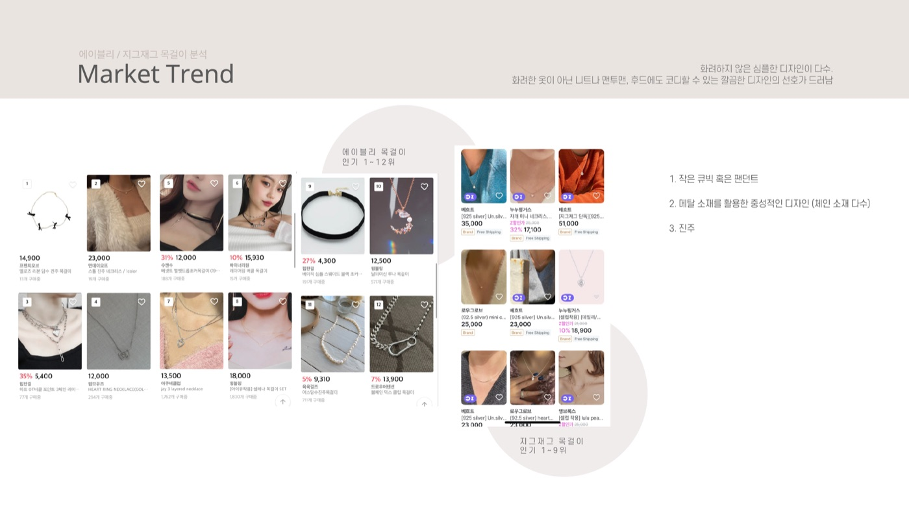
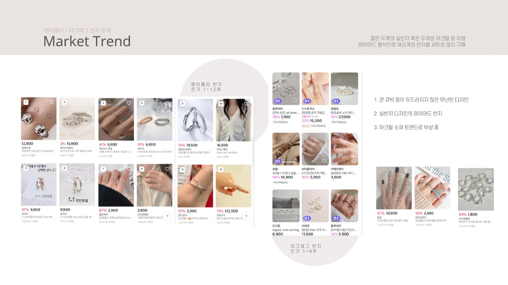
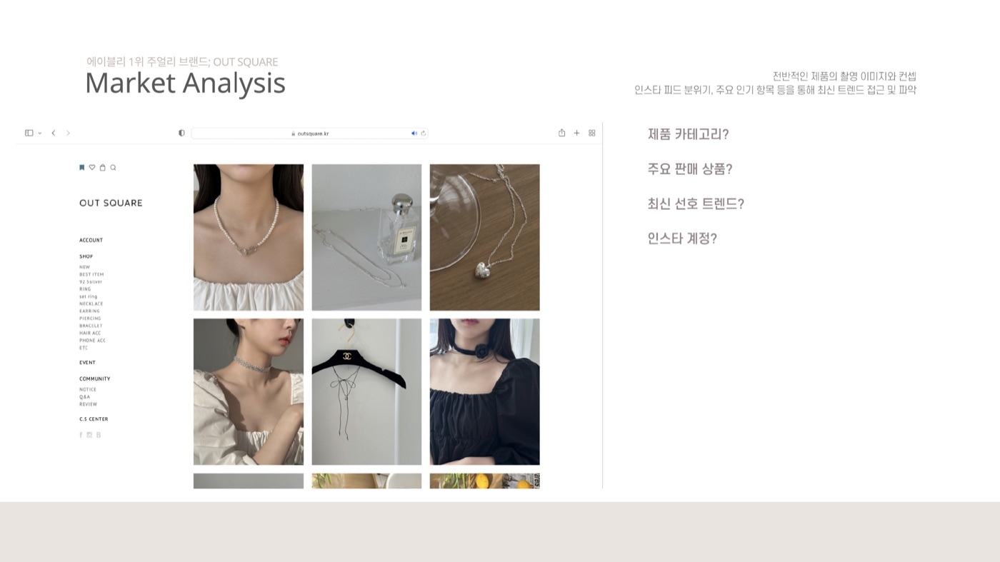
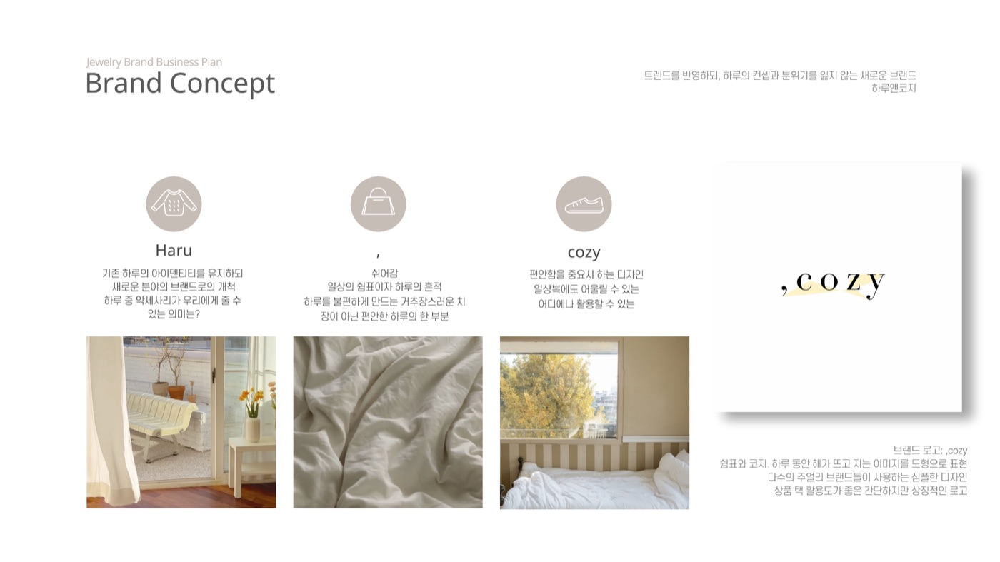
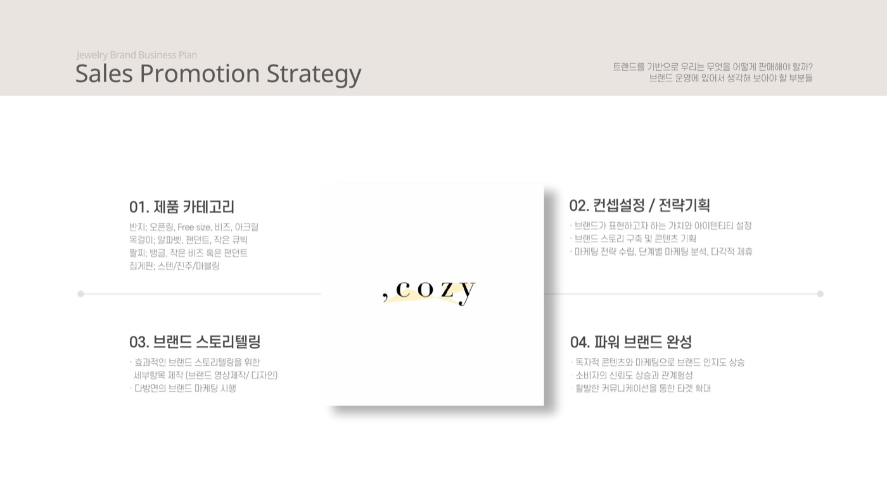
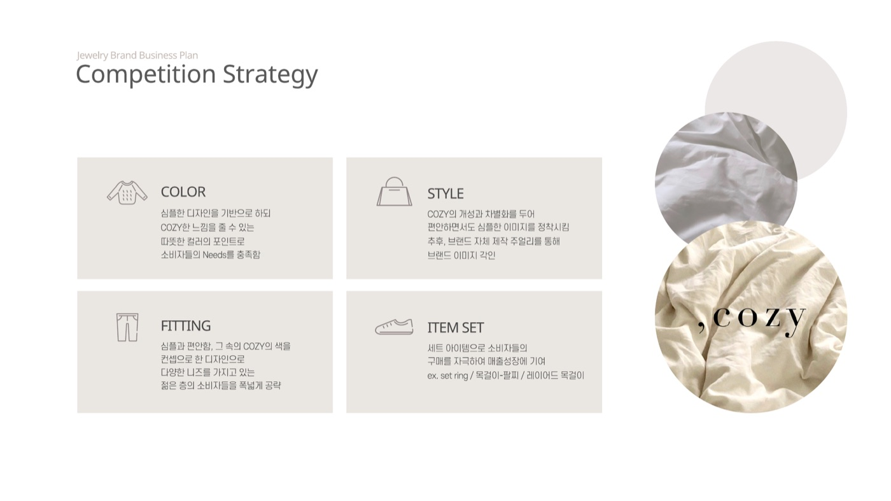
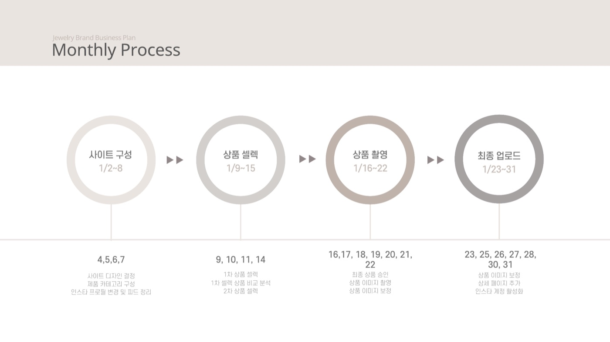
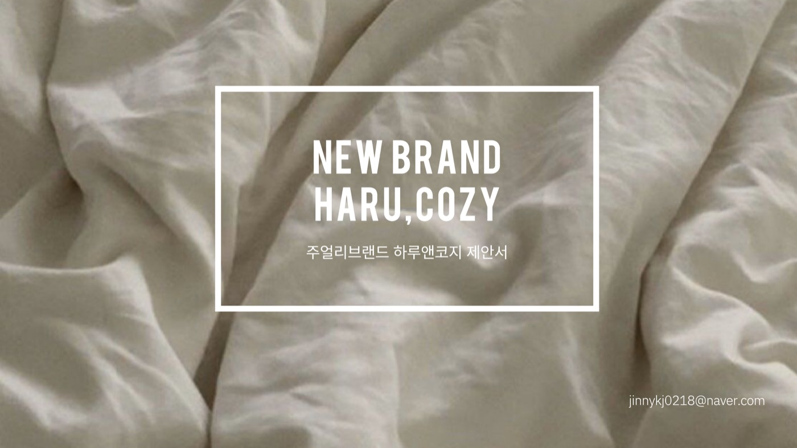

,cozy

Define
Extending the existing brand Haru into jewelry while keeping its identity. Trends reflected, Haru's concept and mood kept
Process
Market research
Trends mapped from top-selling rings, necklaces and bracelets and their price ranges, plus an analysis of competitors' lineups



Naming and logo
Haru, a comma, cozy. The comma as a pause in daily life and a trace of the day ("haru" means "a day"), cozy as comfort that suits everyday clothes. The logo draws the sun rising and setting over one day in simple shapes

Sales strategy
Product categories, concept and brand storytelling tied into a sales strategy, with a competitive strategy built on color, style, fit and set items


Monthly operations plan
A dated monthly process from site setup to product selection, shooting and upload

Result
A name and logo that hold "a pause in the day" in a single comma, proposed together with the sales strategy and operating schedule
